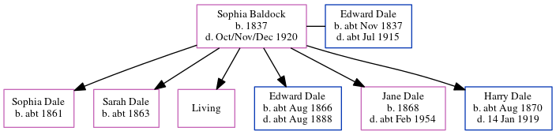

Sophia Dale (née Baldock) 1837 - 1920
[ Home ] | [ Calendar ] | [ Surnames Index ] | [ Errors ] | [ Family History ]Sophia Baldock, the wife of Edward Dale (the three times great-uncle of Nigel Horne), was born in Chartham, Kent, England in 18371,2,3,4,5,6,7,8,9,10,11,12 and married Edward (a bricklayer's labourer with whom she had 6 children: Sophia, Sarah A, Ann Rebecca, Edward, Jane Elizabeth and Harry Edgar, along with 1 surviving child) at St Gregory, Canterbury, Kent, England on 22 Sept 186013.
During her life, she was living in Chilham, Kent, England in 18511; at her birthplace in 18612; at Maygers Row in Chartham on 7 Apr 18613; at Modern Cottages, Wincheap Street, Thanington, Kent on 2 Apr 187114; at Sturry Road in Canterbury on 3 Apr 18816; in Canterbury in 18917 and in 19018; at Sturry Road in Canterbury on 31 Mar 19019; and at Lion Cottages, Sturry Road in Canterbury on 2 Apr 191115.
She died in Oct/Nov/Dec 1920 in Canterbury11.
Children
- Sophia was born c. 1861
- Sarah A was born c. 1863
- Edward was born c. Aug 1866
- Jane Elizabeth was born in 1868
- Harry Edgar was born c. Aug 1870
Citations
- 1851 England Census Online publication - Provo, UT, USA: The Generations Network, Inc., 2005.Original data - Census Returns of England and Wales, 1851. Kew, Surrey, England: The National Archives of the UK (TNA): Public Record Office (PRO), 1851. Data imaged from the National
- 1861 England Census Online publication - Provo, UT, USA: The Generations Network, Inc., 2005.Original data - Census Returns of England and Wales, 1861. Kew, Surrey, England: The National Archives of the UK (TNA): Public Record Office (PRO), 1861. Data imaged from the National
- 1861 England, Wales & Scotland Census - Findmypast (was age 24 and the wife of the head of the household)
- 1871 England Census Online publication - Provo, UT, USA: The Generations Network, Inc., 2004.Original data - Census Returns of England and Wales, 1871. Kew, Surrey, England: The National Archives of the UK (TNA): Public Record Office (PRO), 1871. Data imaged from the National
- 1881 England Census Online publication - Provo, UT, USA: The Generations Network, Inc., 2004. 1881 British Isles Census Index provided by The Church of Jesus Christ of Latter-day Saints © Copyright 1999 Intellectual Reserve, Inc. All rights reserved. All use is subject to the
- 1881 England, Wales & Scotland Census - Findmypast (was age 44 and the wife of the head of the household)
- 1891 England Census Online publication - Provo, UT, USA: The Generations Network, Inc., 2005.Original data - Census Returns of England and Wales, 1891. Kew, Surrey, England: The National Archives of the UK (TNA): Public Record Office (PRO), 1891. Data imaged from The National
- 1901 England Census Online publication - Provo, UT, USA: The Generations Network, Inc., 2005.Original data - Census Returns of England and Wales, 1901. Kew, Surrey, England: The National Archives of the UK (TNA): Public Record Office (PRO), 1901. Data imaged from the National
- 1901 England, Wales & Scotland Census - Findmypast (was age 64 and the wife of the head of the household)
- 1911 England Census Online publication - Provo, UT, USA: Ancestry.com Operations, Inc., 2011.Original data - Census Returns of England and Wales, 1911. Kew, Surrey, England: The National Archives of the UK (TNA), 1911. Data imaged from the National Archives, London, England.
- England & Wales, Death Index: 1984-2005 Online publication - Provo, UT, USA: The Generations Network, Inc., 2007.Original data - General Register Office. England and Wales Civil Registration Indexes. London, England: General Register Office. © Crown copyright. Published by permission of the Cont
- England & Wales, FreeBMD Birth Index, 1837-1915 Online publication - Provo, UT, USA: The Generations Network, Inc., 2006.Original data - General Register Office. England and Wales Civil Registration Indexes. London, England: General Register Office. © Crown copyright. Published by permission of the Cont
- England & Wales Marriages 1837-2005 - Findmypast
- 1871 England, Wales & Scotland Census - Findmypast (was age 34 and the wife of the head of the household)
- 1911 Census for England & Wales - Findmypast (was age 74 and the wife of the head of the household)
Media
1901 England, Wales & Scotland Census - GBC/1901/0005476333
Family Tree
Map
Generated by ged2site. Last updated on Jul 3, 2024
Known Issues
Apr 2, 1911: not living at same address as spouse Edward Dale ('Lion Cottages, Sturry Road, Canterbury, Kent, England'/'Canterbury, Kent, England')